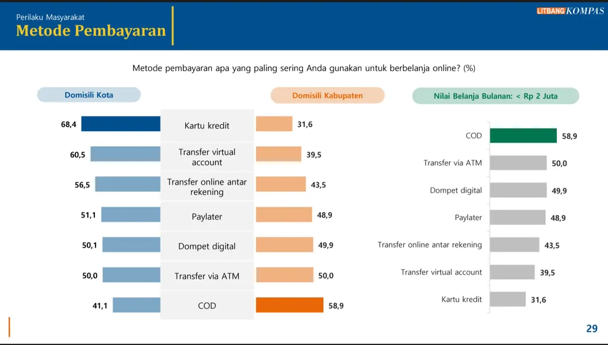
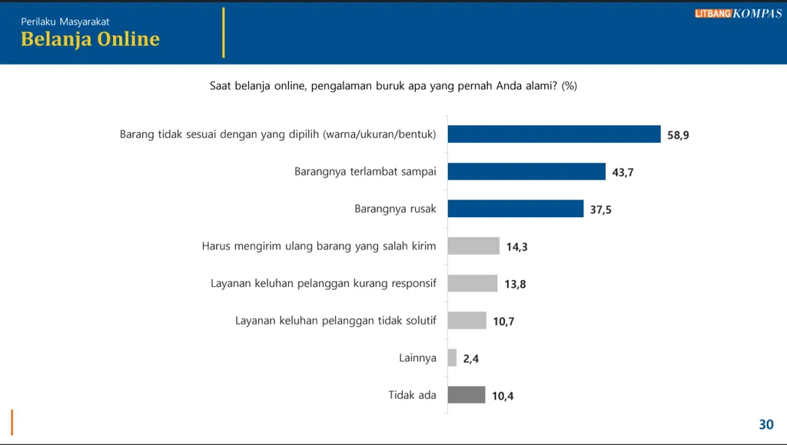

Layar ponsel pintar itu berpendar di tengah kamar yang temaram di rumah Abrial Saffa (23), pekerja teknologi informasi di Jakarta. Hanya dengan tiga kali ketukan jari, sehelai kemeja kerja dan sepaket serum perawatan wajah di keranjang belanja aplikasi lokapasar (marketplace) langsung terbayar lunas. Tidak ada dompet kulit yang dibuka, tidak ada deretan 16 digit angka kartu plastik yang diketik, dan tidak ada proses verifikasi dokumen bergaji bulanan yang memakan waktu berhari-hari. Di halaman akhir pembayaran (checkout), opsi paylater dipilih dalam hitungan detik, memecah tagihan menjadi cicilan instan.
Potret transaksi nirgesek yang kian lumrah di ruang-ruang domestik masyarakat Indonesia tersebut bukan lagi sekadar fenomena gaya hidup sesaat, melainkan sinyal pergeseran yang mengancam salah satu lini bisnis paling menguntungkan milik perbankan, yakni kartu kredit.
Temuan Survei Situasi Konsumen Perbankan-Keuangan dan E-Commerce Litbang Kompas (April 2026) mengungkap fakta yang patut membuat jajaran direksi kredit ritel perbankan waspada. Dalam transaksi belanja daring secara keseluruhan, kartu kredit kini berada di urutan buncit sebagai metode pembayaran utama, yakni hanya digunakan oleh 1,4 persen responden, tertinggal dari paylater (3,2 persen), transfer virtual account (18,8 persen), dompet digital (22,8 persen), dan cash on delivery atau COD (49,4 persen).
Gerusan paling tajam terlihat ketika membedah perilaku pembayaran berdasarkan wilayah dan daya beli. Pada kelompok konsumen dengan nilai belanja bulanan di bawah Rp 2 juta, proporsi penggunaan paylater telah menembus 48,9 persen dan dompet digital mencapai 49,9 persen, melampaui porsi penggunaan kartu kredit yang tertahan di angka 31,6 persen. Bahkan, dari sisi sebaran geografis, penggunaan paylater telah merata antara wilayah perkotaan (51,1 persen) dan kabupaten (48,9 persen), kontras dengan kartu kredit yang masih terkonsentrasi di kota (68,4 persen) dibandingkan dengan kabupaten (31,6 persen).

Litbang Kompas
Tergilas teknologi
Dua dekade silam, kartu kredit perbankan adalah raja tunggal di lanskap pembiayaan konsumsi tanpa agunan (unsecured loan). Kepingan plastik berlogo prinsipal global tersebut menjadi simbol kemapanan kelas menengah baru sekaligus mesin pencetak pendapatan bunga dan komisi (fee-based income) berimbal hasil tinggi bagi bank. Bank-bank berlomba membuka gerai penawaran di pusat perbelanjaan, mengerahkan ribuan tenaga pemasar lapangan (direct sales), dan mengandalkan jaringan kantor cabang fisik untuk menjaring nasabah.
Namun, sejarah mencatat bahwa keunggulan distribusi fisik itu perlahan tergilas oleh gelombang disrupsi teknologi. Berdasarkan Survei Teknologi Informasi Bank Umum yang dirilis Otoritas Jasa Keuangan (OJK), volume transaksi digital melonjak tajam sepanjang periode 2020–2024 yang didorong oleh ledakan penggunaan aplikasi mobile banking.
Dalam Roadmap Pengembangan dan Penguatan Perbankan Indonesia 2026–2030, OJK menegaskan bahwa strategi akuisisi konvensional melalui jaringan cabang dan pemasaran massal semakin kehilangan efektivitasnya seiring beralihnya perilaku konsumen ke kanal digital.
Jejak penuaan bisnis kartu kredit terekam jelas dalam struktur demografi hasil Survei Litbang Kompas. Secara agregat, tingkat kepemilikan kartu kredit di perbankan konvensional hanya berada di level 18,6 persen, terpaut jauh dari adopsi mobile banking yang mencapai 78,4 persen. Apabila dibedah lintas generasi, kartu kredit tampak menjadi produk ”warisan” generasi senior di mana penggunaannya mencapai 45,5 persen pada kelompok baby boomer (58–76 tahun) dan 21,0 persen pada generasi X (44–57 tahun).
Sebaliknya, pada kelompok usia produktif yang menjadi motor konsumsi masa depan, penetrasinya merosot ke angka 11,2 persen di gen Y-madya (36–43 tahun), 16,9 persen di gen Y-muda (28–35 tahun), serta 20,8 persen di gen Z (17–27 tahun).
Ketimpangan serupa menganga pada struktur kelas ekonomi. Kartu kredit sangat elitis karena dikuasai oleh kelompok masyarakat dengan pengeluaran di atas Rp 15 juta per bulan (62,2 persen) dan Rp 8 juta–Rp 14,9 juta (38,7 persen). Adapun pada segmen pengeluaran Rp 2 juta–Rp 4,9 juta dan di bawah Rp 2 juta, penetrasinya masing-masing hanya 13,3 persen dan 7,8 persen. Kekosongan pasar di segmen piramida tengah dan bawah inilah yang dengan cepat dilahap oleh algoritma persetujuan instan paylater.

Litbang Kompas
Dilema likuiditas bank
Selama ini, sebagian bankir berargumen bahwa paylater tidak menggerus kartu kredit karena hanya menyasar transaksi bernilai kecil (micro-ticket size). Argumen tersebut kini kian rapuh. Survei Litbang Kompas memang memperlihatkan bahwa produk yang paling banyak dibeli secara daring dalam sepekan terakhir didominasi oleh barang berfrekuensi tinggi, seperti pakaian (22,3 persen), produk kecantikan dan perawatan tubuh (15,6 persen), perlengkapan rumah tangga (8,9 persen), serta makanan dan minuman (8,1 persen).
Akan tetapi, migrasi pembelian daring juga telah merambah barang berharga mahal (big-ticket items) di mana 51,7 persen konsumen kini memutuskan membeli produk elektronik secara daring dan 41,5 persen membeli produk gawai (gadget) secara daring. Ketika transaksi elektronik dan gawai di lokapasar seperti Shopee (digunakan 87,8 persen responden) dan Tokopedia (52,4 persen) dieksekusi menggunakan cicilan paylater di halaman checkout, di situlah terjadi kanibalisasi langsung terhadap baki debet cicilan kartu kredit.
Kondisi ini memicu dilema strategis di meja direksi perbankan. Di satu sisi, profitabilitas bank tengah berada dalam impitan struktural. Data OJK menunjukkan, rata-rata Net Interest Margin (NIM) perbankan menurun dari 4,91 persen pada 2019 menjadi 4,73 persen di akhir 2025, dengan rata-rata lima tahun terakhir di kisaran 4,67 persen. Ruang mempertahankan margin kian sempit akibat perang suku bunga dana murah (rate war) serta pengetatan moneter Bank Indonesia yang menaikkan suku bunga acuan (BI Rate) ke kisaran 5,75 persen dan imbal hasil Sekuritas Rupiah Bank Indonesia (SRBI) tenor 12 bulan mendekati 7,5 persen pada Juli 2026.
Demi menjaga pertumbuhan intermediasi di tengah proyeksi ekonomi digital Indonesia yang akan menembus 200 miliar–360 miliar dolar AS dan transaksi e-commerce sebesar 150 miliar dolar AS pada 2030, bank menempuh jalan pintas melalui model embedded financing dan kemitraan ekosistem. Bank menyalurkan kredit konsumsi secara tidak langsung (channeling atau joint financing) melalui perusahaan fintech lending dan multifinance yang menjadi mesin pembiayaan di balik paylater lokapasar. Langkah ini memang menambah volume kredit bank secara cepat, tetapi menyerahkan margin bunga ritel yang tebal serta relasi langsung dengan nasabah kepada platform pihak ketiga.
Bahaya ”data blind spot”
Fenomena terdesaknya model perbankan ritel tertutup oleh ekosistem digital bukanlah anomali domestik, melainkan gelombang global. Laporan McKinsey (2024) yang dikutip dalam Roadmap OJK mencatat belanja teknologi perbankan global telah menembus 650 miliar dolar AS pada 2023 dengan pertumbuhan 9 persen per tahun, melampaui pertumbuhan pendapatan industri perbankan dunia yang hanya sekitar 4 persen. Studi Deloitte Digital Banking Maturity 2024 terhadap 349 bank di 44 negara juga menyimpulkan bahwa bank-bank terdepan di dunia telah menghentikan strategi perang fitur konvensional dan beralih menuju hyper-personalization berbasis kecerdasan buatan (AI), machine learning, dan customer data platform (CDP) untuk mengunci loyalitas nasabah di setiap titik transaksi. Di kawasan Asia hingga Amerika Serikat, kolaborasi raksasa keuangan global seperti HSBC dan PayPal bersama perusahaan teknologi bahkan telah melangkah lebih jauh dengan menyelaraskan infrastruktur jalur pembayaran digital generasi baru.
Dibandingkan dengan negara-negara maju, perbankan Indonesia menghadapi risiko kebutaan data (data blind spot) yang jauh lebih akut. Ketika 42,1 persen pengguna bank digital memanfaatkan rekeningnya sekadar sebagai jembatan untuk mengisi saldo (top-up) dompet digital, bank kehilangan visibilitas atas detail belanja nasabah. Bank hanya mencatat dana keluar ke dompet elektronik, sedangkan data perilaku konsumsi (behavioral data) mendekam di server lokapasar dan penyedia paylater.
Masalah ini diperparah oleh fragmentasi infrastruktur data nasional. Pemetaan Cambridge Centre for Alternative Finance (CCAF) dari University of Cambridge (2025) mengungkap bahwa dari enam kelompok data keuangan utama, Indonesia baru memiliki tiga jenis data yang tersedia secara langsung (live), yakni sistem pembayaran (payments), kredit konsumen (customer lending), dan KPR (mortgages). Tiga kelompok data krusial lainnya, yakni tabungan dan investasi, asuransi umum, serta dana pensiun, belum terintegrasi secara live, ditambah belum adanya standardisasi Application Programming Interface (API) di luar sistem pembayaran (non-SNAP).
Untuk keluar dari jebakan kanibalisasi ini, perbankan nasional tidak bisa lagi sekadar menjadi penyandang dana pasif di belakang perusahaan fintech. Pertama, bank harus merespons ekspektasi konsumen dengan membangun kapabilitas pembiayaan instan di dalam aplikasi mobile banking mereka sendiri, sejalan dengan temuan Survei Litbang Kompas bahwa 18,1 persen nasabah mengharapkan fitur pengelolaan keuangan berbasis AI, 7,9 persen membutuhkan pinjaman dana darurat, dan 6,9 persen secara spesifik menantikan hadirnya fitur paylater resmi dari bank konvensional.
Kedua, perbankan harus mengakselerasi adopsi kerangka Open Finance melalui model Account Aggregator (Consent Manager) yang kini didorong OJK. Hanya dengan pertukaran data lintas institusi berbasis persetujuan nasabah (consent-based), bank dapat memulihkan ketajaman credit scoring mereka dan merebut kembali takhta pembiayaan ritel di era ekonomi digital.